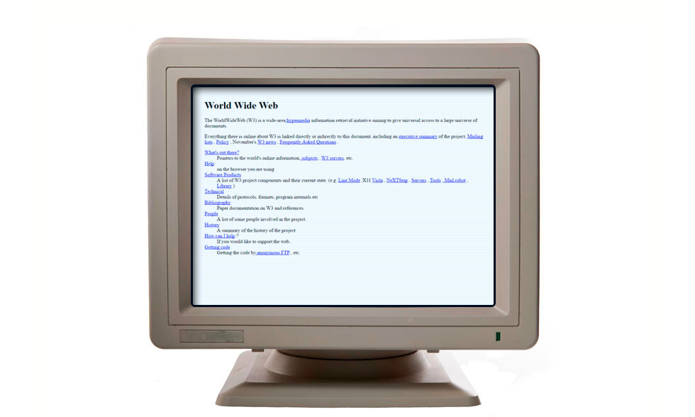

1991 - Primera Página Web
La WWW se Abre al Público

Captura de la primera página web del mundo (1991)
El 6 de Agosto de 1991
El 6 de agosto de 1991, Tim Berners-Lee publicó la primera página web
de la historia en el servidor del CERN. Esta fecha marca el momento en que la World Wide Web
se convirtió en un servicio público disponible en Internet.
🌐 6 de Agosto de 1991
La Web se hace pública
Nace la primera página web del mundo
|
La Dirección de la Primera Página Web
La primera página web de la historia tenía la siguiente dirección:
http://info.cern.ch/hypertext/WWW/TheProject.html
Esta página aún puede visitarse hoy en día (como recreación) en:
http://info.cern.ch/
|
Dato curioso: La primera página web era muy simple, solo contenía
texto plano y enlaces. No tenía imágenes, colores ni diseño elaborado.
¡Pero fue el inicio de todo!
|
¿Qué Contenía la Primera Página Web?
La primera página web era una guía básica sobre qué era la World Wide Web,
cómo usarla y cómo crear páginas web. Incluía:
Contenido de la Primera Página:
- Explicación de qué era el proyecto World Wide Web
- Instrucciones sobre cómo acceder a documentos
- Información sobre cómo configurar tu propio servidor web
- Enlaces a otra documentación relacionada
- Guía para crear páginas web en HTML
- Información de contacto del equipo del CERN
El Texto Original (Traducido)
El encabezado de la primera página web decía:
|
World Wide Web
El proyecto WorldWideWeb (W3) es una iniciativa de hipertexto de amplio alcance
para la recuperación de información, con el objetivo de dar acceso universal a un
gran universo de documentos.
Todo lo que está en línea sobre W3 está enlazado directa o indirectamente a este documento,
incluyendo una lista de correo electrónico y un resumen ejecutivo.
|
Características de la Primera Página
| Característica |
Detalle |
| Fecha de Publicación |
6 de agosto de 1991 |
| Autor |
Tim Berners-Lee |
| Servidor |
info.cern.ch |
| Lenguaje |
HTML (primera versión) |
| Contenido |
Solo texto y enlaces (sin imágenes) |
| Objetivo |
Explicar qué era la WWW y cómo usarla |
| Primera Computadora Servidor |
NeXT Computer de Tim Berners-Lee |
El Primer Servidor Web
Tim Berners-Lee usó una computadora NeXT (la empresa de Steve Jobs después de
dejar Apple) como el primer servidor web del mundo. Esta computadora tenía una nota pegada que decía:
⚠️ ADVERTENCIA ⚠️
"Esta máquina es un servidor. NO APAGARLA!"
|
La WWW se Hace Pública
Aunque la primera página se publicó en agosto de 1991, el verdadero momento de apertura al público
llegó el 30 de abril de 1993, cuando el CERN anunció que la tecnología WWW
sería libre para todos, sin necesidad de pagar regalías.
Cronología de la Apertura:
- 6 de agosto de 1991: Primera página web publicada
- Diciembre de 1991: Primer servidor web fuera de Europa (en Stanford, EE.UU.)
- 1992: Solo 26 servidores web en todo el mundo
- 30 de abril de 1993: CERN declara la WWW de dominio público
- 1994: Explosión de sitios web (más de 10,000)
El Crecimiento Inicial
Al principio, la Web creció lentamente porque:
Desafíos Iniciales:
- Pocos navegadores web disponibles
- Se necesitaban conocimientos técnicos para crear páginas
- Internet aún no era accesible para el público general
- Conexiones lentas (módems de línea telefónica)
| Año |
Número de Sitios Web |
Hito Importante |
| 1991 |
1 |
Primera página web |
| 1992 |
10 |
Primeros servidores fuera del CERN |
| 1993 |
130 |
WWW se hace de dominio público |
| 1994 |
2,738 |
Aparece el navegador Netscape |
| 1995 |
23,500 |
Comienza el comercio electrónico |
Impacto Cultural y Social
La publicación de la primera página web marcó el inicio de la era digital
tal como la conocemos. Transformó la forma en que accedemos a la información, nos comunicamos,
trabajamos y nos entretenemos.
Cambios que Trajo la WWW:
- Democratización de la información: Cualquiera puede publicar contenido
- Comunicación global: Personas de todo el mundo pueden conectarse
- Comercio electrónico: Comprar y vender en línea
- Educación accesible: Cursos y recursos gratuitos en línea
- Entretenimiento: Videos, música, juegos, redes sociales
|
🌍 Impacto Global:
Hoy en día, más de 5 mil millones de personas usan la World Wide Web,
accediendo a 1.8 mil millones de sitios web diferentes.
|
Preservación Histórica
En 2013, el CERN lanzó un proyecto para restaurar la primera página web y
hacerla accesible en su URL original. Puedes visitarla hoy y ver cómo se veía Internet en 1991.
|
💡 Reflexión: La primera página web era extremadamente simple comparada
con los sitios modernos, pero contenía la semilla de una revolución que cambiaría el mundo.
Tim Berners-Lee nunca imaginó que su proyecto se convertiría en la plataforma más
importante de la historia humana para compartir información.
|
📚 Enlaces Relacionados
Para más información sobre la primera página web, consulta:
|